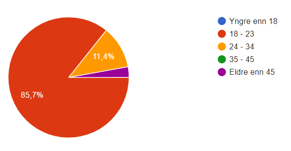
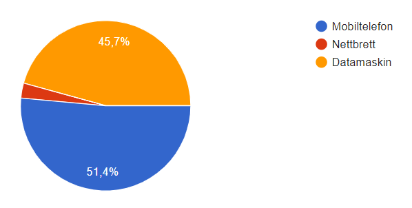

Prosjekt Innlevering P4
Administrative Detaljer
- Klient: Hjalti Hjaltason
- Nettside navn: Ontap
- Link til vår nettside: Trykk her
Testing dokument
Vi startet Google Formet med tre avkrysningsspørsmål for å få en god oversikt over hvilken aldersgruppe testeren tilhører, hvilken type enhet testeren brukte og hvilken nettleser testeren åpnet nettsiden vår i. Deretter la vi inn tre spørsmål hvor testeren kun svare med utfyllende tekst. Her spurte vi om deres førsteinntrykk av siden, om det var noe som var forvirrende eller manglende ved nettsiden og om det var noe som ikke virket slik de hadde forventet. Til slutt stilte vi spørsmålene hvor lett det var å navigere seg rundt på nettsiden og hvor godt de likte den. Her skulle testerene svare på en skala fra en til fem fra “meget dårlig” til “meget god”. På den måten fikk vi to diagrammer som gav oss en indikasjon på testerene sitt helhetsinntrykk av nettsiden. Nettsiden ble også sendte direkte til klienten som ga sin tilbakemelding og formet ble sendt til medlemmene av Ontap for deres tilbakemeldinger.Link til Tilbakemeldingskjema: Tilbakemeldingskjema
Brukertesterene
Siden denne nettsiden er ment for studenter på NTNU som studerer Informatikk på Gløshaugen, prøvde vi i hovedsak å sende ut undersøkelsen til våre medstudenter. Vi sendte også ut testen til andre studenter på NTNU da de også kan relatere seg til en slik nettsiden for en linjeforening. Dermed klarte vi å nå mange brukere innenfor vår målgruppe som kunne gi oss god og konstruktiv tilbakemelding. I tillegg sendte vi ut spørreundersøkelsen til noen eldre og mer erfarne folk innen utvikling som da kunne gi oss mer spesifikk og konstruktiv tilbakemelding. Vi fikk ikke gjennomført like mange live-tester som vi hadde ønsket grunnet corona, men alle fikk gjennomført noen i de ulike kollektivene vi bor i. Siden dette er en informasjons/reklameside for studenter som lurer på om de vil bli med i Ontap, gav vi dem ikke noe oppgave om hva de skulle gjøre på nettsiden. Vi bare lot testeren klikke rundt selv, mens vi observerte for å få et innblikk i hvor de eventuelt sto fast, eller hva de ikke skjønte.
Testplattform
Vi fikk veldig mange “mobiltester” relativt fort som var litt uheldig i og med at kompatibilitet med mobil ikke var hovedprioritert. Etter å ha anbefalt folk å sjekke ut nettsiden vår på datamaskin, fikk vi gradvis flere testere på datamaskin - og dermed enda flere relevante tilbakemeldinger for oppgaven. Tilbakemeldinger fra “mobiltesting” er likevel verdifullt for eventuell senere utvikling av siden.
Tilbakemeldinger
Design
Vi fikk mye konstruktiv tilbakemelding på design, vi fikk kommentarer om at siden var oversiktlig og pen, enkel å ta i bruk, ryddig, ok layout og farger, fint med stort forside bilde og oversiktlig meny. Noen kommenterte også på at siden hadde et “leken” og kreativ design og at den passet for ungdommelig / ung voksen som målgruppe. Vi fikk også kommentarer om at siden var litt kjedelig og så litt tom ut, en fikk gammeldags vibe fra siden og at det var litt vanskelig å se innholdet på mobil, grunnet at innholdet ikke ble skalert bra.
Navigasjon
På navigasjon fikk vi mye kommentarer om at det var vanskelig å navigere på mobil, grunnet at knappene og menyene ble veldig små. En synes det forvirrende med navbar under forsidebildet på forsiden, og noen synes det var forvirrende at man ikke kommer tilbake til Ontap siden når man “går tilbake til Online”. Men vi fikk også masse positive tilbakemeldinger, vi fikk kommentarer som “Clean og lett å navigere rundt” og “Oversiktlig og enkel å ta i bruk”.
Innhold
Vi fikk generelt positiv tilbakemelding på innhold, utenom at noen følte at nettsiden var litt tom. Det var også et problem på oppskrifter.html med at teksten på “Bryggere(e)” og “Nummer” kollapset, dette mistenker vi er fordi noen bokser inneholder mer tekst enn andre som gjør at tekst elementer blir forskjøvet innenfor oppskrift boksen. Noen ønsket to bilder til på galleri for å oppnå symmetri på oversikten.
Brukervennlighet
For brukervennlighet fikk vi også generelt positiv feedback. Når vi livetestet fikk vi inntrykk av at brukere ikke brukte visningsfunksjonen for galleriet og kun så på oversikten. Klienten ga også feedback om at feilmeldinger på alkoholkalkulatoren skulle være en annen farge enn resultatet og at man skal forsikre seg om at riktig format og verdier er oppgitt.
Live-testing
Observerte at testerene ikke benytter visningsmodus på galleri og at de blir litt forvirret av “tilbake til online” linken. Testerene gikk naturlig fra venstre til høyre i menyen og besøkte de forskjellige sidene i den rekkefølgen. Videre så vi at testerene klikker på den animerte pilen på forsiden som sender brukeren til introduksjonen på forsiden. Observerte at testere synes det er artig med “javascript kommentarene” på forsiden. Observerte at en tester prøvde å trykke på Ontap logoen i footeren, og dermed ikke hadde noe “vei” tilbake hos Online sin nettside.
Våre tilbakemeldinger
Header
Vi fikk tilbakemelding om at teksten på banneret var litt lite fra noen brukere. Dette er fordi den er lagd for å etterligne Online.ntnu.no sitt banner som har den størrelsen. Da er dette ikke noe vi vil endre på med mindre klienten selv ønsker det.
Footer
Vi bestemte oss for å legge til en link til forsiden på logoen i footeren pga livetestingen. Dokumentert i P3_Changes.
Mobil
Var ikke i hovedfokus grunnet at vi ikke ble vurdert for mobil kompatibilitet men ser at det er flest som vil åpne den på mobil. Da må det evt legges til av klient senere for at siden skal bli mer responsiv på mobiler.
"Litt tomt"
Vi fikk ikke så mye kontent av klienten på forhånd, så av den grunn kunne noen av sidene oppfattes som litt tynne. En mulighet hadde vært å finne på ting selv, men vi syntes det ville være uheldig ettersom klienten vår er “ekte”.
Alkoholkalkulator
Klientens direkte feedback var om alkoholkalkulatoren og resultater fra den. Etter at vi mottok feedbacken gikk vi gjennom koden og la til endringer for å tilfredsstille klienten da vi ennå hadde tid til dette. Det ble dokumentert i P3_Changes. Vi opplevde også ved livetesting at folk ikke helt forsto hva kalkulatorern gjorde. Det ga oss ideen om muligens å implementere en infoknapp på alkoholkalkulatoren som når trykket på vil gi en popup med informasjon og hva den gjør og hva formelen er.
Galleri picture_view
Vi opplevde at brukere ikke tok i bruk view-funksjonen på galleri.html. Vi innså at vi kunne ha lagt inn noe som gjorde det mer tydelig at det var mulig å trykke på bildene som en liten tekstboks eller tilsvarende
Selvrefleksjon
Mest av alt har vi lært om fordelene med å jobbe godt sammen i et team. Vi har gjennom hele prosessen hatt et tett
samarbeid både gjennom møter på skolen og på zoom. Dette har vi opplevd som veldig nyttig da alle har sine styrker og
svakheter, som gjør at vi hele tiden kan hjelpe hverandre der noen står fast og lære av hverandre. Dette gjorde at vi fikk en
bratt læringskurve og følte etter hvert at vi fikk en god forståelse.
Gjennom å utvikle en nettside sammen forsto vi viktigheten rundt bruk av git. Dette var noe som tok litt tid å sette seg inn i,
men utover i prosjektet løste alle “git-gåten, og vi lærte også at det var en stor fordel å ta kunne. I oppstarten lagde vi en
branch til hver av gruppemedlemmene og en master som vi pushet det til. Vi lærte fort at det ikke var den mest optimale løsningen,
men at vi i tillegg burde ha en develop branch som vi pushet endringene til fortløpende, slik at vi plutselig ikke overskriver noe
i master. I tillegg hadde tidvis problem med en irriterende DS_Store-fil, og da viste .gitignore seg å være meget nyttig å ta i bruk.
CSS-en er noe vi syntes var litt utfordrende å måtte samle alt i en fil, da vil helst ville hatt individuelle css-filer for hver av de
ulike sidene hvor vi kunne skrevet mer spesifikk styling og én for felles styling. Vi skjønte at dette var for at vi skulle lære
viktigheten av unik navngivning av id’er og class, slik at ting ikke skulle overskride hverandre, eller eventuelt om de skulle det.
Vi endte til slutt opp med en CSS-fil på nærmere 700 linjer, og dette kan kanskje være vanskelig for utenforstående å skulle sette
seg inn i - hvis noe skulle videreutvikles ved en senere anledning.
Det å planlegge og strukturere oppsettet av nettsiden før vi satte i gang å programmere gjorde hele prosessen mye enklere.
Ved å fordele oppgaver og sette tidsfrister gjorde at vi fikke en framgang i prosjektet og ikke bare gjorde alt i siste liten.
Hvis noen ble fortere ferdig med sin arbeidsoppgave enn andre, eller at det viste seg å være mindre jobb enn forventet,
steppet de inn og hjalp de andre på gruppen der de sto fast. Figma var også et veldig nyttig verktøy for å bli enige om designet
og hele oppsettet på nettsiden. Det var en fordel å bli helt enige om dette på forhånd, slik at dette ikke ble en diskusjon senere
i prosessen.